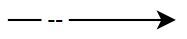
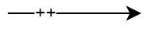
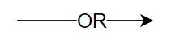
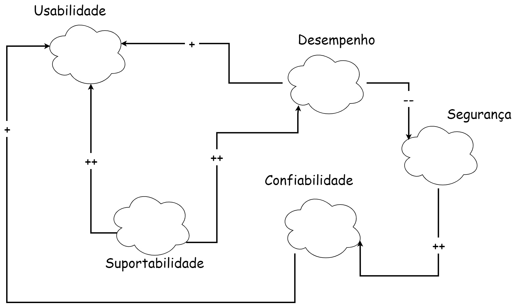
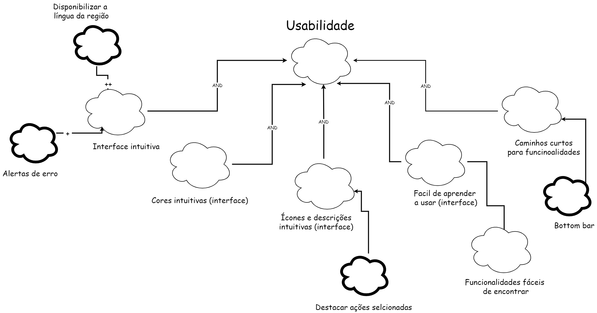
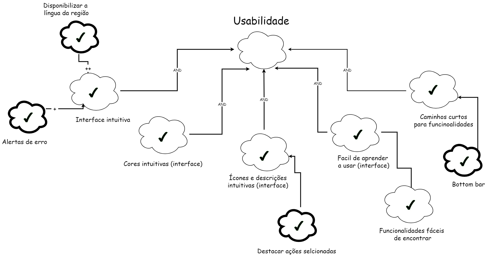
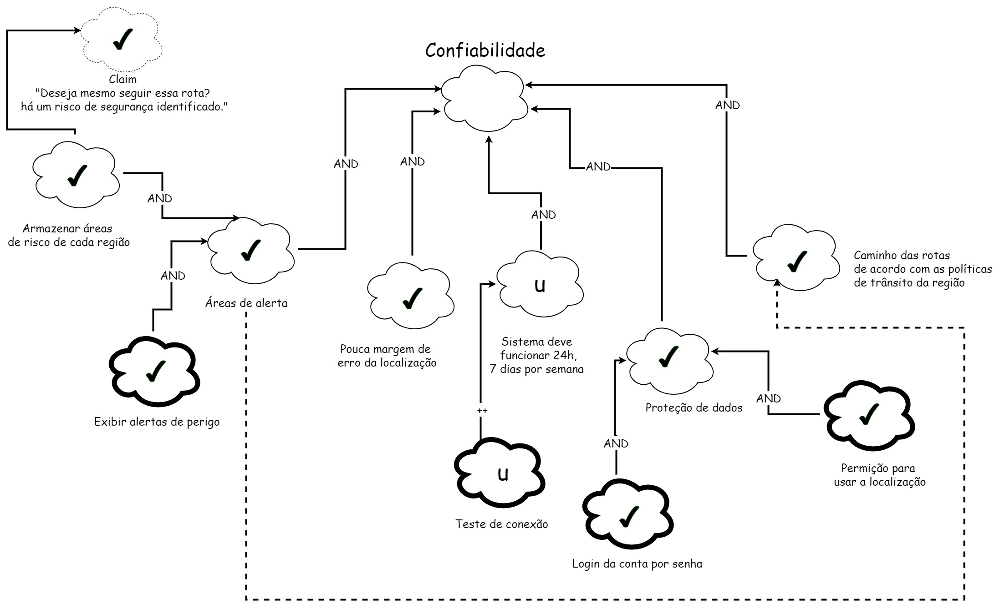
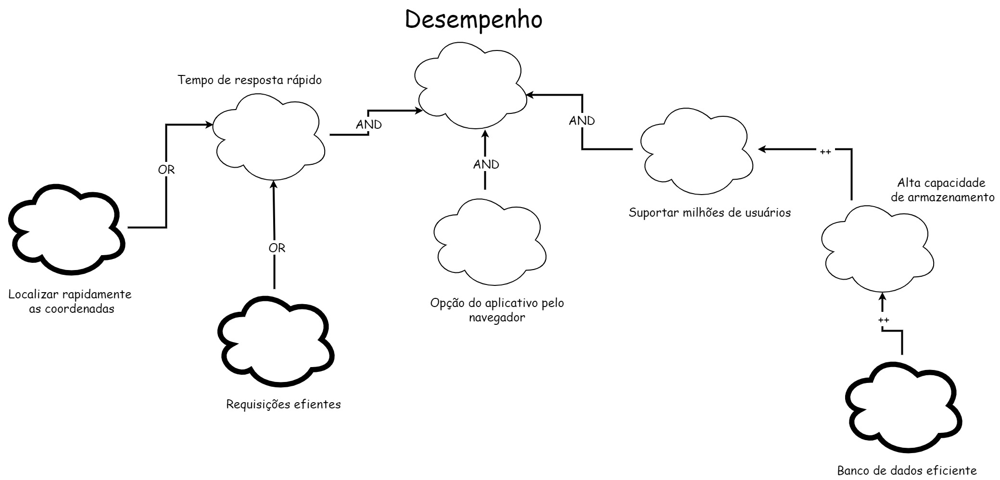
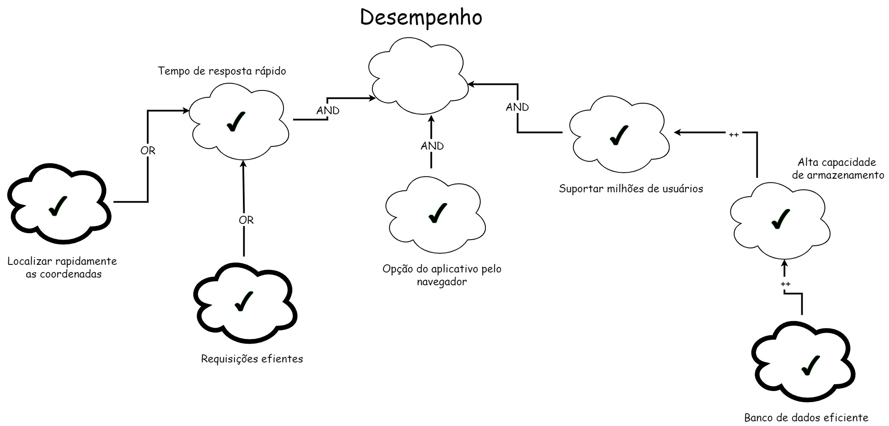
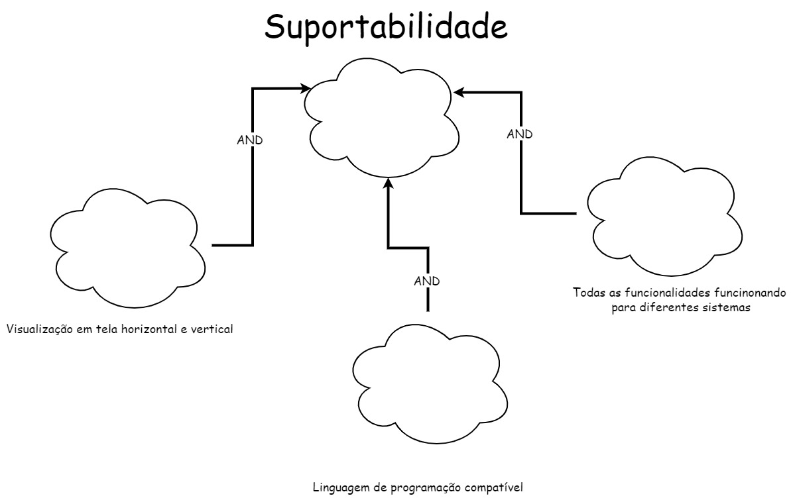

NFR Framework
1. Introdução
"Característica abstrata, a qual se deseja considerar na análise, visando saber se a mesma será cumprida ou não cumprida, ou seja, escolhida ou não escolhida para ser implementada. Aqui, no fundo, são requisitos não funcionais, vistos como critérios/atributos de qualidade." (SERRANO, SERRANO, 2019).
1.1 Dicionário
- softgoals : Objetivo sem definição clara nem critérios de satisfação precisos (SILVA, 2019).
- SIG : Softgoal Interdependency Graph e em português é Gráfico Interdependente de softgoals.
2. Metodologia
Foi utilizado o site Draw.io para fazer os diagramas. Na tabela abaixo é possível ver a legenda dos diagramas.
| Imagem | Legenda |
|---|---|
| Softgoal de NFR | |
 |
Softgoal de Afirmação |
| Softgoal de Operacionalização | |
 |
Contribuição HURT |
|  | Contribuição BREAK |
 |
Contribuição HELP |
|  | Contribuição MAKE |
 |
Contribuição AND |
|  | Contribuição OR |
| Satisfeito | |
| Negado | |
 |
Indefinido |
3. NFRF
3.1 Geral
Cada um dos softgoals abaixo irá ser destrinchado em mais softgoals, mas na Imagem 1 podemos observar como eles se relacionam. Os softgoals abaixo foram retirados da página de Especificação Suplementar

3.2 Usabilidade
Foram utilizados os Requisitos Não-Funcionais localizados no tópico de usabilidade da página de Especificação Suplementar. Na imagem 2 encontra-se o SIG de usabilidade:

Propagação de Impactos
Na imagem 3 encontra-se o SIG de usabilidade com a propagação de impactos:

3.3 Confiabilidade
Foram utilizados os Requisitos Não-Funcionais localizados no tópico de confiabilidade da página de Especificação Suplementar. Na imagem 4 encontra-se o SIG de confiabilidade:

Propagação de Impactos
Na imagem 5 encontra-se o SIG de confiabilidade com a propagação de impactos:

3.4 Desempenho
Foram utilizados os Requisitos Não-Funcionais localizados no tópico de desempenho da página de Especificação Suplementar. Na imagem 6 encontra-se o SIG de desempenho:

Propagação de Impactos
Na imagem 7 encontra-se o SIG de desempenho com a propagação de impactos:

3.5 Suportabilidade
Foram utilizados os Requisitos Não-Funcionais localizados no tópico de suportabilidade da página de Especificação Suplementar. Na imagem 8 encontra-se o SIG de suportabilidade:

Propagação de Impactos
Na imagem 9 encontra-se o SIG de suportabilidade com a propagação de impactos:

4. Histórico de versão
| Data | Versão | Modificações | Autor(es) | Revisor(es) |
|---|---|---|---|---|
| 18/12/2022 | 1.0 | Criação da página de NFR | Alexia | Luiza |
5. Bibliografia
SERRANO, Milene; SERRANO, Mauricio. Requisitos – Aula 17. 2019. Disponível em: link Acesso em: 18 jan. 2022
SILVA, R. NFR4ES: Um Catálogo de Requisitos Não-Funcionais para Sistemas Embarcados. Tese (Mestrado em Engenharia de Software) - Centro de Informática, Universidade Federal de Pernambuco. Recife, p. 155. 2019. Acesso em: 18 jan. 2022